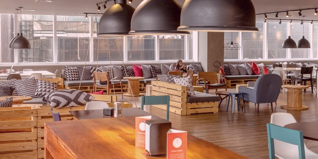
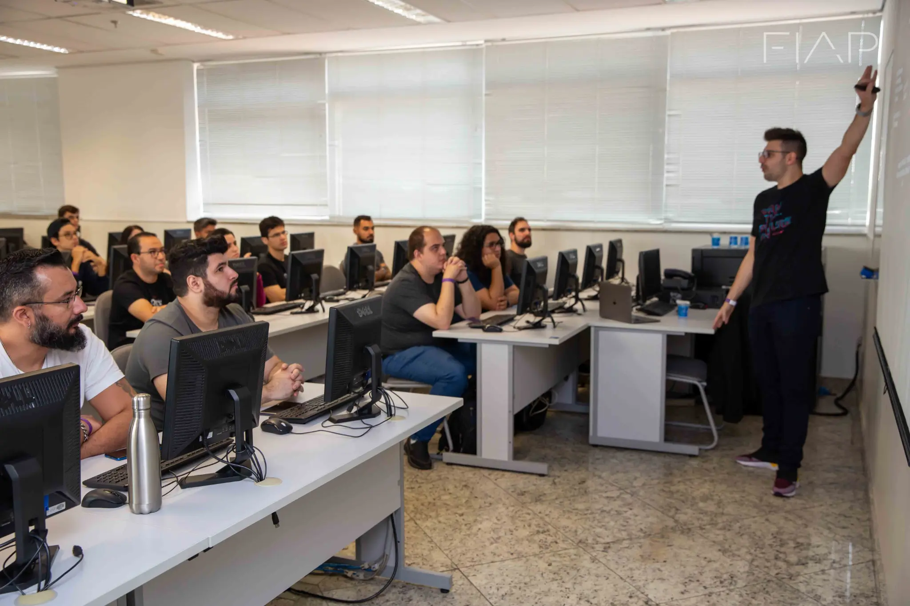
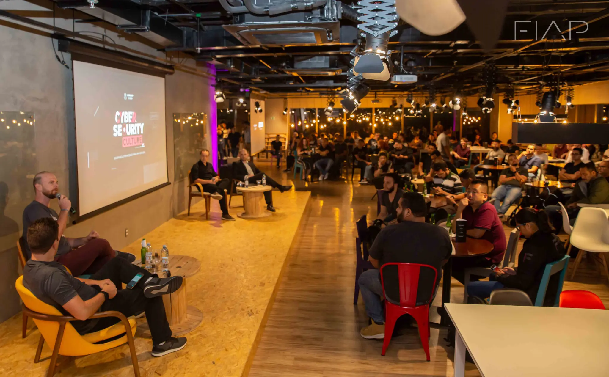

01 UNIDADE
Campus Paulista
- Categoria
- Unidade acadêmica
- Localização
- Av. Paulista, 1106 — 6º andar, Cerqueira César, São Paulo/SP.
- Informação útil
- Atendimento informado: segunda a sexta, das 8h às 21h30.
01 Roteiro de campus
Um diretório para se orientar entre a entrada, os espaços de trabalho e os lugares de encontro. Os registros de 2012 estão datados; confirme o que continua disponível antes da visita.
Endereço e atendimento oficiaisFIAP SÃO PAULO
Av. Paulista, 1106 — 6º andar, Cerqueira César, São Paulo/SP. A página de contato informa atendimento de segunda a sexta, das 8h às 21h30.
01 UNIDADE

02 COLABORAÇÃO

03 TECNOLOGIA

04 EVENTOS
05 CONVIVÊNCIA
As fontes e as ressalvas de data aparecem na página Detalhes e fontes.